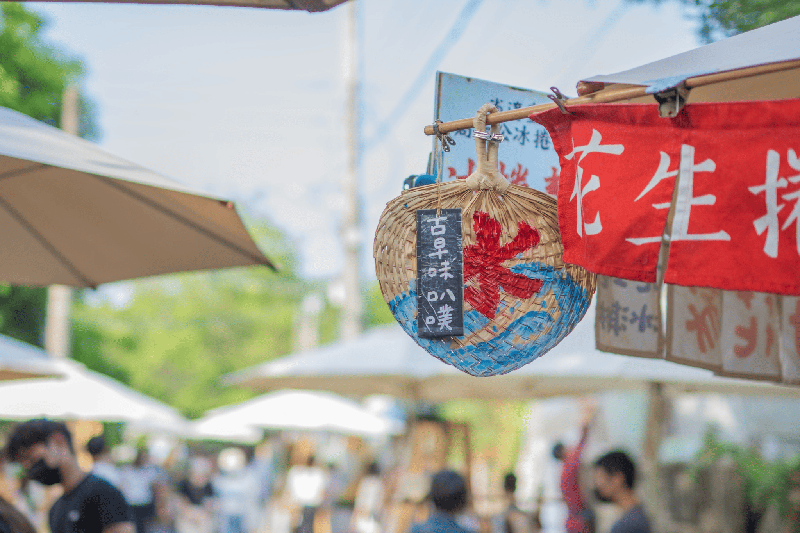

09:00
10:00
10:00
1

朴子清木屋：老外科診所巡禮
走訪1930年日洋混合木造醫館，聆聽醫家三代故事與常民生活記憶[cite: 16]。

Chia-Yi Cultural Odyssey · 跨國青年學伴同行，在糖香與雙偶藝境中看見真實台灣

走訪1930年日洋混合木造醫館，聆聽醫家三代故事與常民生活記憶[cite: 16]。
走讀百年製糖工場遺構與日式宿舍群，認識台灣近代蔗糖產業供應鏈[cite: 16]。
親手慢炒現榨甘蔗汁，在焦糖香氣中體驗台灣甜蜜產業的味覺歷史[cite: 16]。
觀賞平均80歲長輩偶劇天團精湛演出，並由爺奶親自指導操偶互動[cite: 16]。
參訪融合閩日洋建築美學的百年名醫故居，感受地方崇文行醫的人文底蘊[cite: 16]。
欣賞精緻原創布袋戲偶工藝，由偶師指導掌中戲操偶，完成雙偶藝術對照[cite: 16]。